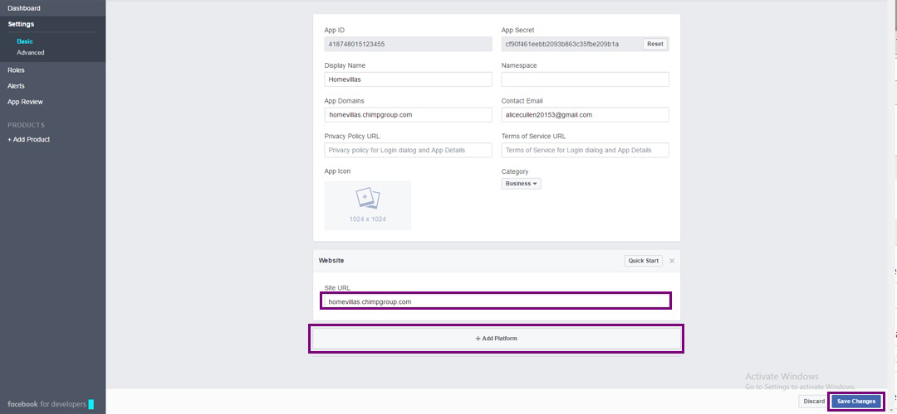

Get Started


WP Real Estate Modules
Listing Alerts
The new exciting Add-On by Homevillas theme is now presented to you. This awesome feature Alert you about newly available listing and lets you select the listing rightly matched with your interests and skills. Follow following steps to setup alerts on your real estate portal and enjoy being Alert! Navigate by follow the path to get property listing alerts.

HOW TO SAVE SEARCH?
Frequency Settings
There are some frequencies of listing alert which are given below and can be set from: Homevilla Settings >> Listing Alerts:
Annually:
In this frequency, you allow user to set alert frequency to annually. If
this switch is on, you don’t allow user to set alert frequency
annually, and if it will be off you have allowed user to set alerts
frequency to annually.
Biannually:
In this frequency, you allow user to set alert frequency to Biannually.
If this switch is on, you don’t allow user to set alert frequency
Biannually, and if it will be off you have allowed user to set alerts
frequency to Biannually.
Monthly:
In this frequency, you allow user to set alert frequency to monthly, if
this switch is on, you don’t allow user to set alert frequency monthly,
and if it will be off you have allowed user to set alerts frequency to
monthly.
Fortnightly:
In fortnightly frequency, you allow user to set alert frequency to
fortnightly, if this switch is on you don’t allow to user to set alert
frequency fortnightly, if it will be off you have allowed user to set
alerts frequency to fortnightly.
Weekly:
In weekly frequency, you allow user to set alert frequency to weekly, if
this switch is on, you don’t allow user to set alert frequency weekly,
and if it will be off you have allowed user to set alerts frequency to
weekly.
Daily:
Again in daily frequency, you allow user to set alert frequency to
daily, if this switch is on, you don’t allow user to set alert frequency
daily, and if it will be off you have allowed user to set alerts
frequency to daily.
Never:
And in this, you allow user to set alert frequency never, if this switch
is on, you don’t allow user to set alert frequency to never, and if it
will be off you have allowed user to set alerts frequency to never.

Menus
CS Theme Options
Go to your Dashboard by following the path:
Appearance >> CS theme Options
–General : Configure your Logo , Header ,Subheader, Footer , Social Icons , Social Sharing settings
–Color : Configure your overall theme color according to your requirements.
–Typography/ Fonts : Configure your Fonts and other settings.
–Sidebar : Configure your Sidebar settings.
–Footer Sidebar : create your Footer sidebars
–API Settings : Configure your API settings with your social Icons.
–Auto Update : Configure your auto update settings to update your theme.
–Import / Export : Import and export data via .XML files by using this options.
– Maintenance Mode : Configure your settings regarding maintenance mode
Social API’s Configurations
Facebook APP
Please follow following steps to create and configure Facebook API's:
1. Login to Facebook
Before creating a developer account, login in to your Facebook account.
2. Create new Facebook app
After login, Open link to create new Facebook App from here: Create New Facebook APP .Choose My Apps in the header navigation and select Add a New App.
3. Choose Category
Choose the category you want to add.
4. Choose a Name
Choose a name for your app and select Create New Facebook App ID. Choose a category for your app.
5. Protect your App Secret
Add Captcha details to avoid robotic spamming.
6.Enable Development Mode
New Facebook apps exist in development mode by default. This limits published actions and related objects such as friend tagging to Facebook Timelines owned by a developer of the application. Once your application is ready for public use you can switch from development mode to public mode to allow your app to interact with Facebook accounts not associated with your app.
7.Select Platform
Choose the platform you want to add.
8. Add your site URL (Redirect URL)
Keep in mind, this is the most sensitive step while configuring API's to add valid redirect url of your site in Face book APP.

8. Get App ID and Secret Key
Copy App ID and App Secret Key and save changes.
After creating App, Add API keys in API settings from: Homevillas Settings / API settings / Facebook and All Done!

Google+ APP
To Create Google+ APP, following given steps:
1. Go to the Google Developers Console .
2. Create Project
From the project drop-down, select a project , or create a new one.

3. Create OAuth Client ID
4. Configure Consent Screen
5. Add Valid Redirect URl:
Add following valid redirect url in your app as well as theme's API settings: http://homevillas.chimpgroup.com/wp-login.php?loginGoogle=1 (Replace your site's link)

6. Get Secret Keys
- Enable API to Generate Google API Key
Navigate Dashboard tab to enable API from : https://console.developers.google.com/apis/library?
- Create Google API key
- Copy Google API key
Click the API Key to create Google API key
After creating App, Add API keys in API settings from: Homevillas Settings / API settings / Captcha and All Done!
Captcha APP
Follow following Steps to Create Google reCAPTCHA App:
1. Visit Google Recaptcha Site
Start creating your Google reCAPTCHA App. This can be found at https://www.google.com/recaptcha/intro/index.html
2. Get reCAPTCHA
Click on Get reCAPTCHA button in header.

{kind=link}
{kind=link}
{kind=link}
{kind=link}
{kind=link}
{kind=link}
{kind=link}
{kind=link}
{kind=link}
{kind=link}
{kind=link}
{kind=link}
{kind=link}
{kind=link}
{kind=link}
3. Fill in your Application Details
After adding correct details. Press 'Register' button to create App.
4. Get Your reCAPTCHA API Keys
After creating App, Add API keys in API settings from: Homevillas Settings / API settings / Captcha and All Done!